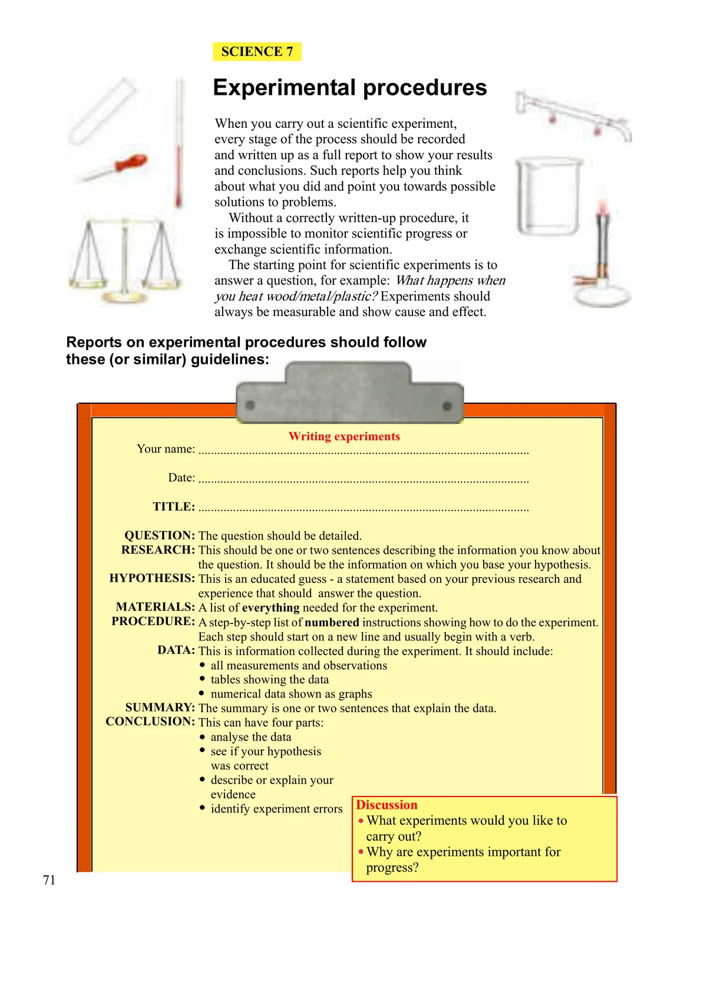

SCIENCE 7 Experimental procedures When you carry out a scientific experiment, every stage of the process should be recorded and written up as a full report to show your results and conclusions. Such reports help you think about what you did and point you towards possible solutions to problems. Without a correctly written-up procedure, it is impossible to monitor scientific progress or exchange scientific information. The starting point for scientific experiments is to answer a question, for example: What happens when you heat wood/metal/plastic? Experiments should always be measurable and show cause and effect. Reports on experimental procedures should follow these (or similar) guidelines: Writing experiments (PB p. 71 form) QUESTION: The question should be detailed. RESEARCH: This should be one or two sentences describing the information you know about the question. It should be the information on which you base your hypothesis. HYPOTHESIS: This is an educated guess - a statement based on your previous research and experience that should answer the question. MATERIALS: A list of everything needed for the experiment. PROCEDURE: A step-by-step list of numbered instructions showing how to do the experiment. Each step should start on a new line and usually begin with a verb. DATA: This is information collected during the experiment. It should include: • all measurements and observations • tables showing the data • numerical data shown as graphs SUMMARY: The summary is one or two sentences that explain the data. CONCLUSION: This can have four parts: • analyse the data • see if your hypothesis was correct • describe or explain your evidence • identify experiment errors Discussion: • What experiments would you like to carry out? • Why are experiments important for progress?
set out to.. (7 A #4)، والنقطة بعد for example. داخل الملاحظة النموذجية (7 B)، والشرطة المفردة مع مسافة في قائمة المفردات step -by-step (WB ص 116).[
{
"num": 1,
"prompt": "1 Every stage of a scientific experiment should ... → ______",
"answers": [
"c"
]
},
{
"num": 2,
"prompt": "2 This report will ... → ______",
"answers": [
"e"
]
},
{
"num": 3,
"prompt": "3 If the procedure isn't written up, it is impossible to... → ______",
"answers": [
"d"
]
},
{
"num": 4,
"prompt": "4 Scientific experiments set out to.. → ______",
"answers": [
"a"
]
},
{
"num": 5,
"prompt": "5 Experiments should always... → ______",
"answers": [
"b"
]
}
][
{
"num": 1,
"question": "RESEARCH: 'Some things float on water.'",
"model_answer": "Too vague and does not provide useful scientific information to base a hypothesis on (e.g., density, shape, or trapped air inside hollow metal ships).",
"explain_ar": "لم يقدّم خلفية علمية تؤسَّس عليها الفرضية."
},
{
"num": 2,
"question": "HYPOTHESIS: 'Perhaps water is solid.'",
"model_answer": "Not an educated guess based on research or experience — everyone already knows water at room temperature is a liquid, not a solid.",
"explain_ar": "تخمين غير منطقي لا يستند إلى البحث ولا الخبرة."
},
{
"num": 3,
"question": "MATERIALS: 'water, things'",
"model_answer": "Incomplete and far too vague ('things'); it must list every specific item and measuring tool needed (e.g. tank of water, steel ball, empty hollow metal tin/dish, balance).",
"explain_ar": "كلمة things مبهمة وتنقصها القائمة الدقيقة."
},
{
"num": 4,
"question": "PROCEDURE: 'Put some things in water. See what happens.'",
"model_answer": "Not a step-by-step numbered list, lacks measurable details and clear verbs on separate lines.",
"explain_ar": "تنقصها الخطوات المرقّمة المحددة والقياسات."
},
{
"num": 5,
"question": "DATA: 'I put some things in water. The small heavy things sank but some of the flat heavy things floated.'",
"model_answer": "Repeats procedure wording ('I put...') and lacks concrete measurements (weight/dimensions of specific named objects), structured observations, tables, or graphs.",
"explain_ar": "تخلو من الأرقام والملاحظات المجدولة."
},
{
"num": 6,
"question": "SUMMARY: 'Flat things usually float.'",
"model_answer": "Too general and unsupported by measured data (for instance, a flat solid iron plate sinks whereas hollow shaped dishes float by displacing water).",
"explain_ar": "استنتاج متسرّع لا يفسّر البيانات بدقة."
},
{
"num": 7,
"question": "CONCLUSION: 'My idea was wrong.'",
"model_answer": "Too short and missing most of the four parts required: it does not analyse the data, state the original hypothesis, explain the evidence, or identify experiment errors.",
"explain_ar": "اقتصر على جملة قصيرة وغاب عنه التحليل والدليل ورصد الأخطاء."
}
][
{
"label_ar": "RESEARCH & HYPOTHESIS (الخلفية والفرضية المعلّلة)",
"placeholder": "RESEARCH: Gravity pulls all objects toward Earth, while air pushes upward (air resistance) more strongly on wide, flat objects than on compact spheres. | HYPOTHESIS: Compact heavy and light spheres of equal size will hit the ground at the same time (speed does NOT depend on weight alone)."
},
{
"label_ar": "MATERIALS & PROCEDURE (الأدوات والخطوات المرقّمة بالأفعال)",
"placeholder": "MATERIALS: A solid iron ball (500 g), a hollow plastic ball of identical diameter (50 g), a 2-metre measuring tape, a flat tray on the floor. | PROCEDURE: 1. Hold both spheres at exactly 2.00 metres above the tray. 2. Release both at the exact same instant. 3. Listen and watch which hits the tray first. 4. Repeat 3 times and also compare dropping a flat sheet vs a crumpled paper ball."
},
{
"label_ar": "DATA, SUMMARY & 4-PART CONCLUSION (البيانات، الملخص، والاستنتاج رباعي الأجزاء)",
"placeholder": "DATA: Trial 1–3: Iron ball & plastic ball hit simultaneously (at ~0.64 s); flat paper took ~1.9 s while crumpled ball (~0.66 s). | SUMMARY: Compact spheres of very different weights fell at the same speed, whereas flat paper slowed down. | CONCLUSION: Analysing the data confirms our hypothesis: falling speed is not caused by weight, because equal-sized balls reached the bottom together (our evidence); differences with flat paper came from air resistance, and timing errors come from slight hand-release delay."
}
]{
"pb_text_vs_image": "طُوبقت PB ص 71 مع pb-73.png (قائمة Writing experiments + أدوات المختبر والمناقشة).",
"wb_ocr_vs_image": "طُوبقت WB ص 103–105 مع wb_tail-104.png وwb_tail-105.png وwb_tail-106.png: حُفظت صيغ 'set out to..' و'for example.'، وحُلّ نقد 7 B واستمارة 7 C."
}